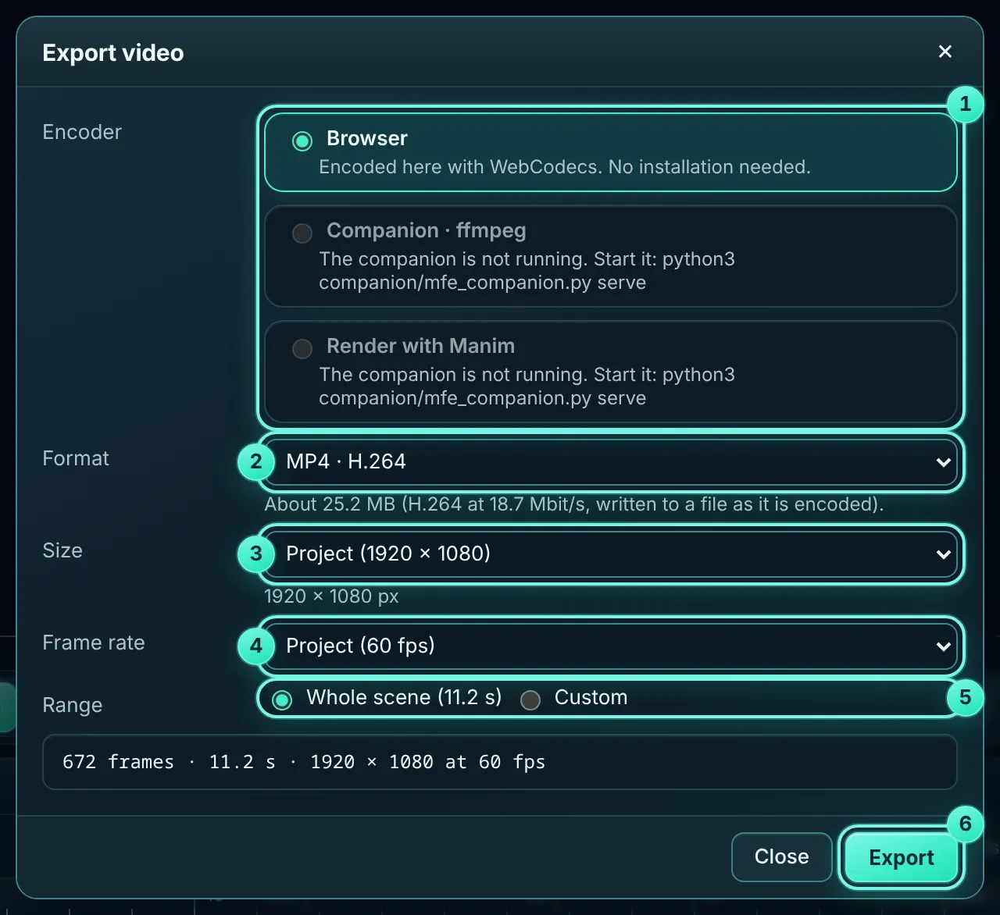
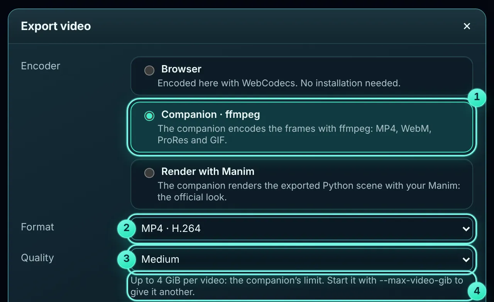
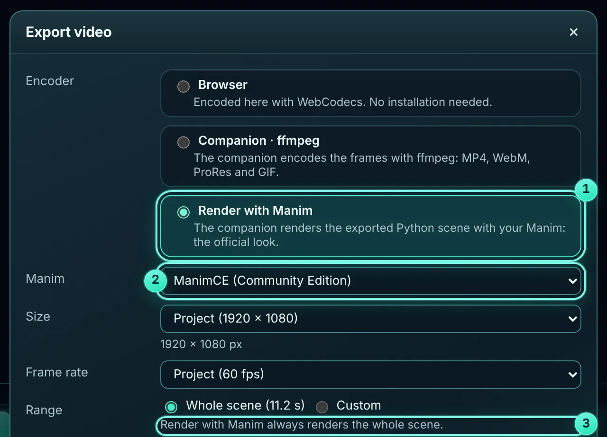
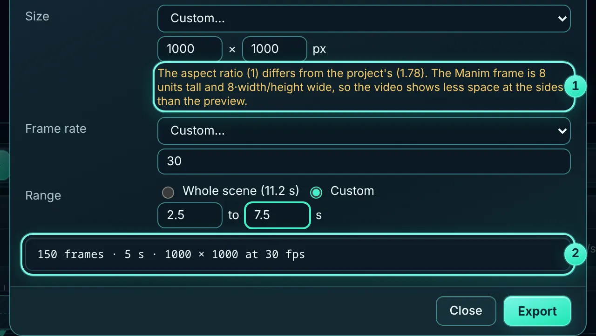
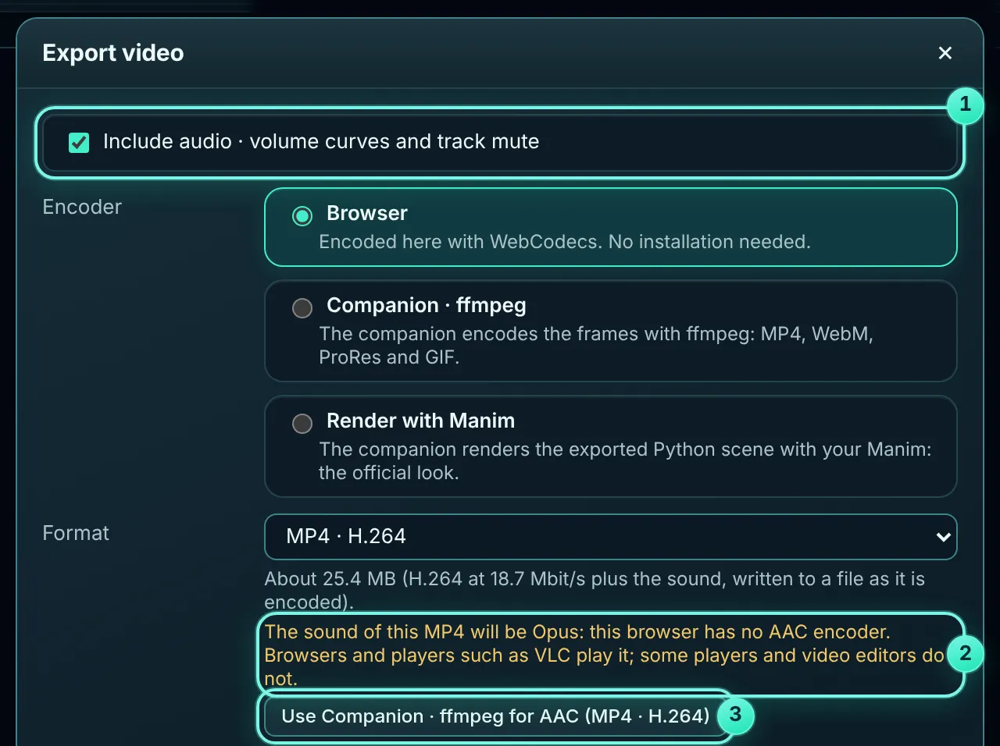
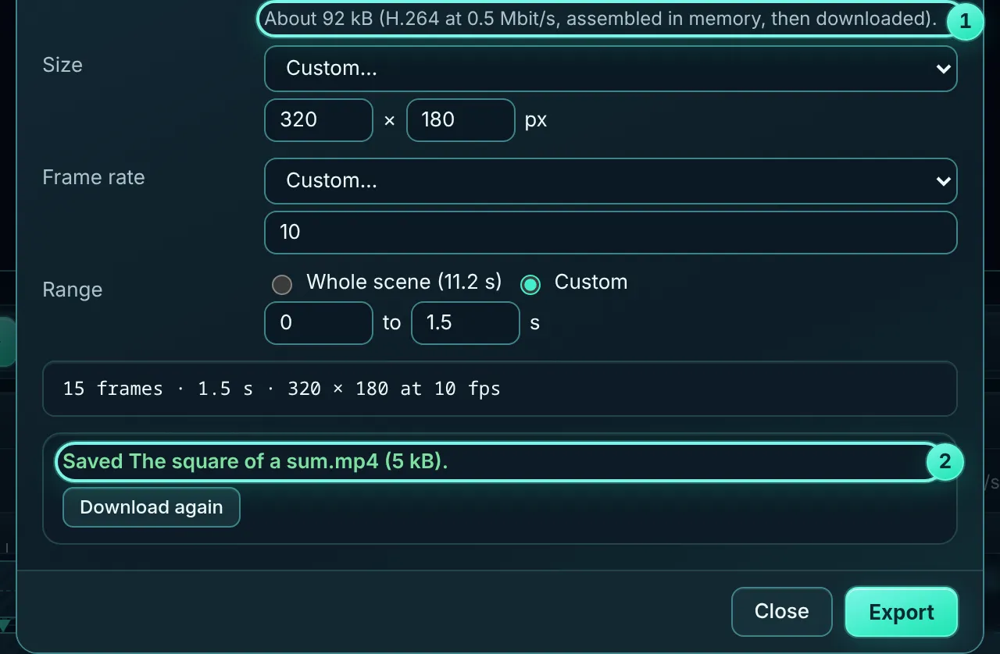

Exporting video
Turn the scene into a video file. Your browser can encode it, the companion’s ffmpeg can, or your own Manim can draw it: pick the one that fits what you have.
The dialog
Choose Export ▸ Video…. The same entry is in the list that opens from the arrow of the Export… button, next to the menus. Exporting says what each export is for.

- Encoder: what makes the video (next section). One that is not available stays on the list, greyed out, with the reason.
- Format: the file type. The list depends on the encoder.
- Size: the project’s own size, a preset or a size of your own.
- Frame rate: the project’s, a preset or your own.
- Range: the whole scene, or a stretch of it.
- Export starts it.
Under the fields, one line says what you will get — for example 672 frames · 11.2 s · 1920 × 1080 at 60 fps. The file is named after the project and lasts exactly its frames divided by its frame rate, to the frame.
Three ways to make the video
The encoder decides who draws and encodes the frames. Each one changes the fields under it; the sections that follow show them one by one.
| Browser | Companion · ffmpeg | Render with Manim | |
|---|---|---|---|
| What draws the picture | The editor, as in the Preview | The editor, as in the Preview | Manim, from the exported Python |
| What you need | A browser that can encode video (Chrome and Edge can) | The companion running, and ffmpeg on its machine | The companion started with --allow-manim-render, and a ManimCE or ManimGL it can reach |
| Formats | MP4 (H.264 or AV1), WebM (VP9) | MP4 (H.264), WebM (VP9), MOV (ProRes), GIF | MP4 |
| Range | Whole scene or custom | Whole scene or custom | Whole scene |
| Sound | Yes | Yes, except in a GIF | Yes |
Start with Browser: it needs nothing. Choose Companion · ffmpeg for a cleaner H.264 file, for ProRes or for a GIF. Choose Render with Manim when the video must be Manim’s own picture, for example to put it next to scenes you wrote by hand.
In the browser
The browser encodes the frames itself, with WebCodecs, and nothing else has to run. The frames are drawn by the same renderer as the Preview, so the video matches what you see. A scene with a camera is filmed through it, as the camera view shows it.
- MP4 · H.264, MP4 · AV1 and WebM · VP9 are the formats. A format your browser cannot encode at the size you chose is greyed out and says not supported by this browser at this size. When none can be, the dialog says so and suggests a smaller size, or the companion.
- Where the browser has no WebCodecs at all, Browser is greyed out: This browser cannot encode video (WebCodecs is missing). Use Chrome or Edge, or the companion.
- The dialog estimates the size: About 25.2 MB (H.264 at 18.7 Mbit/s, written to a file as it is encoded). It is the bitrate the editor picks, times the length, and the sound when you include it. Where the browser keeps the file in memory it says assembled in memory, then downloaded instead. A simple scene comes out far smaller than the estimate: the one in the last figure of this page was estimated at 92 kB and made 5 kB.
With the companion’s ffmpeg
The editor draws the same frames and sends them to the companion, a small program on your machine, whose ffmpeg encodes them. It adds formats the browser does not have.

| Format | What it is for |
|---|---|
| MP4 · H.264 | The usual file for the web and for sharing. ffmpeg encodes it with x264. |
| WebM · VP9 | An open format for the web. |
| MOV · ProRes 422 HQ | A large, high-quality file to edit in a video editor. |
| GIF | A looping picture without sound. At most 50 frames a second and 1920 pixels on a side. A long or large GIF can run over the companion’s limit: it then refuses the job, and the dialog shows why. |
Quality — Low (small file), Medium or High (large file) — sets how much the encoder keeps. MOV and GIF have no such choice.
Under the quality the dialog says how large a video this companion writes: Up to 4 GiB per video: the companion’s limit. Start it with --max-video-gib to give it another. A video that passes the limit is never saved cut short: the export fails and says so, and nothing is written. The companion also stops an export when its disk is nearly full. How large a video can be has both limits and how to change them.
Two things must be in place: the companion running, and ffmpeg on its machine. When either is missing the option says which. The page about the companion shows how to start it and how to check that ffmpeg is found.
Rendered by Manim
The editor exports the Python scene (the same one as Export ▸ Python) and the companion has your own Manim render it: the video is Manim’s, frame for frame.

- The Manim list offers ManimCE (Community Edition) and ManimGL (3b1b). For a library the companion has no Python for, the dialog says so in red and Export stays off. When it is not the library the project is made for, the dialog says that the exported scene is converted.
- The size and the frame rate are the ones of the dialog. The range is always the whole scene: the exported Python has no range.
- It runs code. The Python that Manim renders is generated by the editor,
but it is still run on your machine, so the companion keeps this off until you start it
with
--allow-manim-render. On Linux with bubblewrap it runs in a sandbox with no network; elsewhere the dialog warns that Manim runs without a sandbox: the exported Python code gets all your permissions. - While it works, the dialog says Manim CE is rendering (animation 2) with the
frame it has reached. A render that takes longer than ten minutes is stopped; the
companion’s
--manim-timeoutsets the limit. - A formula on the timeline that does not render holds this encoder back: it needs the LaTeX of every formula to be right, and says which to fix in the Creator.
The video ends with the last animation. Sound that goes on after it is cut there, and the dialog says by how much.
Size, frame rate and range

- Size: Project uses the size of the project, the Resolution of File ▸ Project settings…. The presets are 720p (1280 × 720), 1080p (1920 × 1080), 1440p (2560 × 1440) and 2160p (3840 × 2160). Custom… takes a width up to 7680 and a height up to 4320, each at least 16. Both must be even, except for a GIF.
- Frame rate: the project’s (also in Project settings…), 24, 25, 30 or 60, or a number of your own from 1 to 240. A GIF takes at most 50.
- Range: Whole scene (its length in seconds), or Custom with a start and an end in seconds. Render with Manim always uses the whole scene.
The frame of the scene is always 8 units tall. A picture of another shape than the project’s shows more or less space at the sides than the Preview does, and the dialog warns you.
Sound in the video
A project with sound clips gets an option at the top of the dialog, Include audio · volume curves and track mute. It is on by default. The sound is the same mix as Export ▸ Audio… (Audio): the volume lines and the track mutes are applied.

- Browser. WebM carries Opus. MP4 carries AAC where the browser has an AAC encoder (Chrome and Edge on Windows and macOS). Where it has none — Chrome on Linux — the MP4 carries Opus: a valid file that browsers and players such as VLC play, and some players and video editors do not. The dialog says so before you export. If a companion with an AAC encoder is running, a button under the warning, Use Companion · ffmpeg for AAC (MP4 · H.264), switches to Companion · ffmpeg with MP4 in one click.
- Companion · ffmpeg. The editor sends the mix with the frames and ffmpeg encodes it into the file: AAC in MP4 and MOV, Opus in WebM. A GIF has no sound.
- Render with Manim. ffmpeg adds the mix, as AAC, to the video Manim renders. That video ends with the last animation, so sound that goes on longer is cut there.
- Length. An export mixes an hour of sound at most. A longer video goes without it, and the dialog says so.
The companion needs to be version 1.5 or newer, with an ffmpeg that has the encoder, to add sound; the dialog says what is missing.
The file, and stopping

The file is named after the project: The square of a sum.mp4. In Chrome and Edge a window asks where to save it before the export starts, and the dialog ends by saying Written to The square of a sum.mp4 and its size. Elsewhere the browser downloads the file when it is done, and the dialog says Saved and offers Download again.
While it runs, the dialog shows what it is doing — Encoding, Sending frames, Mixing audio — and a progress bar with the frame it has reached. Cancel export stops it and throws the partial file away. Close says Cancel and close while it runs. When the button says Saving…, the file is being closed: that cannot be cancelled, and closing the dialog only hides it.
What the dialog tells you
| Message | What it means |
|---|---|
| Waiting for a formula to render (name)… | A formula on the timeline is still being drawn. Export stays off until it is done, so that no old picture is filmed. |
| name does not render with its current LaTeX: the video draws its last good render. | Browser and ffmpeg use the last picture that worked. Render with Manim cannot: fix the formula in the Creator. |
| name is empty and will be missing from the video. | A formula with no content has nothing to film. |
| The companion is not running. Start it: … | The two companion encoders need it. The line gives the command (Starting it). |
| Rendering with Manim is off. Restart the companion with --allow-manim-render… | Render with Manim is off until the companion is started with that option. |
| ffmpeg is not installed on the companion’s machine (or not on PATH). | Install ffmpeg where the companion runs. The health command tells how. |
| Up to 4 GiB per video: the companion’s limit. Start it with --max-video-gib to give it another. | How large a video Companion · ffmpeg may write. The number is the one of the companion that is running. |
| This companion is older than 1.7: a video over 4 GiB may come back cut short, with no warning. Update companion/mfe_companion.py. | An older companion did not check the size of what it wrote. Use the mfe_companion.py of this version. |
| The video is larger than 4 GiB, the most this companion writes for one video, so it was stopped… | The export failed at the companion’s limit, and nothing was saved. Export a shorter range, a smaller size or a lower quality, or restart the companion with a higher limit (How large a video can be). |
| The disk of the companion’s temporary folder (…) is nearly full: less than 1 GiB is free there, so the job was stopped… | The companion keeps 1 GiB of that disk free. Free some room in the folder the message names, or start the companion with TMPDIR naming a folder on a larger disk. |